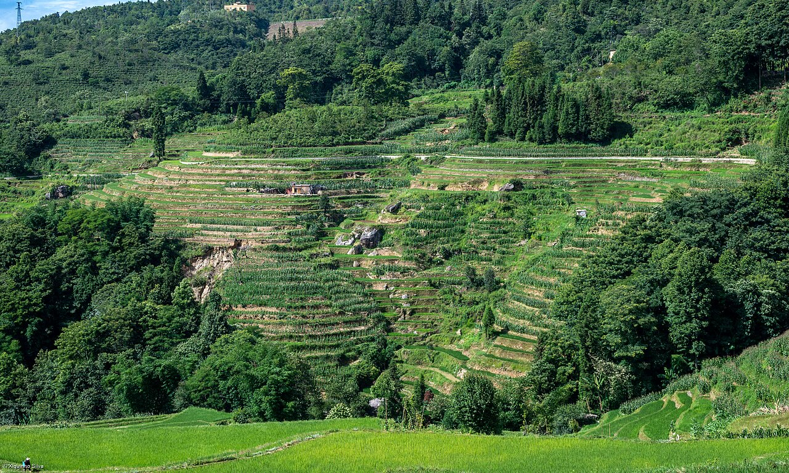

生态工程
本期导读
自生 · 循环 · 协调 · 整体

视频原话 · 导读3 句
- 同学们好！这节课梳理人教版选择性必修二第四章第三节——生态工程，也是选必二的最后一节。9.5s
- 高考常考生态工程四个基本原理的判断，以及农村综合发展型、湿地和矿区生态恢复工程的分析。9.6s
- 我们按七个考点梳理，每个考点都讲清楚怎么考、怎么做。5.6s
生态工程的概念01#
应用生态学和系统学等原理和方法，对人工生态系统进行分析、设计和调控，或对被破坏的生态环境进行修复、重建
目的：促进人类社会与自然环境和谐发展
少消耗
多效益
可持续
考法
特点：少消耗、多效益、可持续；四个基本原理：自生、循环、协调、整体
视频原话4 句
- 考点一，生态工程的概念。应用生态学和系统学等学科的基本原理和方法，对人工生态系统进行分析、设计和调控，或对已被破坏的生态环境进行修复、重建。15.8s
- 它的目的是促进人类社会与自然环境和谐发展。4.7s
- 与传统工程相比，生态工程是一类少消耗、多效益、可持续的工程体系。7.2s
- 考法：生态工程的特点“少消耗、多效益、可持续”要记牢；它遵循的是自生、循环、协调、整体四个基本原理。11.2s
自生原理02#
由生物组分产生的自组织、自我调节、自我更新和维持
有效选择生物组分并合理布设：多种净化能力强的水生植物，考虑生态位差异
创造条件，使生物组分形成互利共存关系
关键词
生物多样性、多种生物、合理布设、互利共存 → 自生原理
视频原话4 句
- 考点二，自生原理。由生物组分而产生的自组织、自我调节和自我更新、维持，就是系统的自生。10.1s
- 要实现自生，需要有效选择生物组分并合理布设，比如选择污染物净化能力较强的多种水生植物，并考虑它们的生态位差异。11.4s
- 还要创造有益于生物组分生长、发育、繁殖，以及它们形成互利共存关系的条件。7.6s
- 关键词：生物多样性、多种生物、合理布设、互利共存。看到这些，就想到自生原理。9.0s
循环原理03#
促进物质迁移与转化，转化率较高
前一环节的废物尽可能被后一环节利用
典型：无废弃物农业
关键词
物质循环、废物利用、无废弃物、多级利用 → 循环原理
视频原话4 句
- 考点三，循环原理。在生态工程中促进系统的物质迁移与转化，既保证各个环节的物质迁移顺畅，也保证主要物质或元素的转化率较高。13.2s
- 通过系统设计，使前一环节产生的废物尽可能地被后一环节利用，减少整个生产环节“废物”的产生。9.2s
- 典型例子是“无废弃物农业”：秸秆、粪便等进入沼气池，沼渣、沼液还田，实现物质的循环利用。9.6s
- 关键词：物质循环、废物利用、无废弃物、多级利用。看到这些，就想到循环原理。8.8s
协调原理04#
处理好生物与环境、生物与生物的协调与适应
考虑适应性：西北干旱地区种耐旱灌木和草，不大量种需水多的乔木
考虑环境容纳量：放牧不超过载畜量，否则草场退化
- 干旱地区
- →种耐旱灌木、草
- 超载放牧
- →草场退化
关键词
适应性、环境容纳量、适地适种、合理载畜量 → 协调原理
视频原话4 句
- 考点四，协调原理。处理好生物与环境、生物与生物的协调与适应。7.0s
- 要考虑生物的适应性，比如在西北干旱地区，应种植耐旱的灌木和草，而不是大量种植需水较多的乔木。9.6s
- 还要考虑环境容纳量，比如草原放牧不能超过载畜量，否则会造成草场退化。7.7s
- 关键词：适应性、环境容纳量、适地适种、合理载畜量。看到这些，就想到协调原理。9.1s
整体原理05#
树立整体观
遵从自然生态系统的规律，各组分有适当比例、有序结构
社会—经济—自然复合系统：兼顾生态、经济和社会效益
关键词
整体、兼顾、社会—经济—自然、考虑农民收入和生活 → 整体原理
视频原话4 句
- 考点五，整体原理。树立整体观，遵循整体原理。5.6s
- 一方面，要遵从自然生态系统的规律，各组分之间要有适当的比例，使系统各组分之间构成有序的结构。9.9s
- 另一方面，人类处在一个社会—经济—自然复合而成的巨大系统中，要兼顾生态、经济和社会效益。9.2s
- 关键词：整体、兼顾、社会—经济—自然、考虑农民收入和生活。看到这些，就想到整体原理。9.5s
原理的判断06#
| 实例 | 原理 |
|---|---|
| 湿地中种植多种净化能力强的水生植物 | 自生 |
| 桑基鱼塘：塘泥肥桑、蚕沙喂鱼 | 循环 |
| 西北干旱地区种杨树，大片死亡 | 违背协调 |
| 只种树不顾农民生活，“前面造林、后面砍林” | 违背整体 |
解题方法
抓关键词：多物种、互利共存——自生；废物利用——循环；适应环境、不超载——协调；兼顾经济社会——整体
视频原话6 句
- 考点六，生态工程原理的判断，这是高考的必考点。5.1s
- 湿地中种植多种净化能力强的水生植物：自生原理。5.5s
- 桑基鱼塘中，塘泥肥桑、蚕沙喂鱼：循环原理。5.1s
- 西北干旱地区种植杨树，结果大片死亡：违背了协调原理。6.0s
- 林业工程只注重种树，不考虑当地农民的生活，结果“前面造林、后面砍林”：违背了{整体原理|brown}。9.1s
- 解题方法：抓关键词。多物种、互利共存——自生；废物利用——循环；适应环境、不超载——协调；兼顾经济和社会——整体。12.9s
生态工程实例07#
农村综合发展型
以沼气工程为中心，种植、养殖、加工相结合，物质多级循环利用
湿地生态恢复
退耕还湿；建立缓冲带减少干扰；依靠自然演替恢复功能
矿区废弃地恢复
关键：植被恢复及土壤微生物群落的重建
易错
矿区恢复的关键不是种农作物，而是恢复植被和土壤微生物群落（人工制造表土、多层覆盖）
视频原话4 句
- 考点七，生态工程实例。第一，农村综合发展型生态工程：以沼气工程为中心，种植业、养殖业和加工业相结合，实现物质的多级循环利用。14.5s
- 第二，湿地生态恢复工程：采用工程和生态措施相结合的方法，比如退耕还湿，在湿地周围建立缓冲带，减少人类干扰，依靠自然演替等机制恢复湿地的生态功能。15.8s
- 第三，{矿区废弃地的生态恢复工程|brown}：关键在于植被恢复，以及植被恢复所必需的土壤微生物群落的重建。10.2s
- 易错：矿区恢复的关键不是种农作物，而是恢复植被和土壤微生物群落；人工制造表土、多层覆盖，再种植适应性强的植物。12.2s
易错速查✓
先自己判断，再点按钮查看对错与解析。
- 1生态工程的特点是少消耗、多效益、可持续说法正确。
- 2种植多种植物、提高生物多样性体现了循环原理说法错误：体现了自生原理
- 3无废弃物农业主要体现了循环原理说法正确。
- 4西北干旱地区大量种植杨树体现协调原理说法错误：违背协调原理
- 5兼顾自然、经济、社会效益体现整体原理说法正确。
- 6矿区生态恢复的关键是尽快种植农作物说法错误：关键是恢复植被和土壤微生物群落
多物种讲自生，无废弃讲循环；适地适种讲协调，三效兼顾讲整体！
视频原话 · 易错速查5 句
- 最后，用六道判断题检验一下。3.6s
- 判断一：生态工程的特点是少消耗、多效益、可持续？对。判断二：种植多种植物、提高生物多样性体现了循环原理？错，体现了自生原理。15.2s
- 判断三：无废弃物农业主要体现了循环原理？对。判断四：西北干旱地区大量种植杨树体现协调原理？错，违背了协调原理。13.9s
- 判断五：兼顾自然、经济、社会效益体现整体原理？对。判断六：矿区恢复的关键是尽快种植农作物？错，关键是恢复植被和土壤微生物群落。15.7s
- 七个考点串成一条线：多物种讲自生，无废弃讲循环，适地适种讲协调，三效兼顾讲整体。选必二到这里就全部讲完了，我们下期再见！13.2s
图片来源
图片来源：Wikimedia Commons —— xiquinhosilva《Hani Rice Terraces》CC BY 2.0
Photo: xiquinhosilva, CC BY 2.0